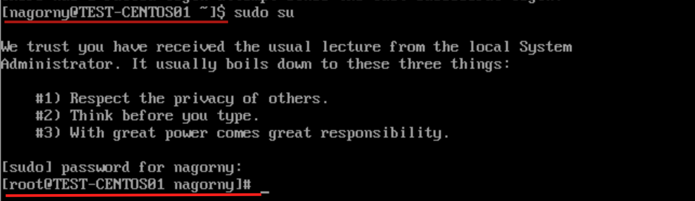
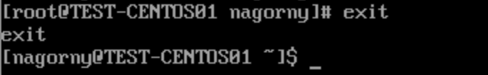

Создание и удаление пользователей CentOS 7
Создание пользователя
Для создания пользователя в CentOS 7 используется команда adduser.
Из под пользователя root:
adduser username
Либо из под пользователя с привилегиями sudo
sudo adduser username
Далее нужно установить пароль для созданного юзера командой passwd.
Для пользователя root:
passwd username
Или для пользователя с привилегиями sudo
sudo passwd username
Добавление и удаление пользователей из групп. Передача привилегий Sudo.
Если пользователю требуется выполнять команды с правами root, ему нужно предоставить доступ к
sudo добавив в группу wheel.
Сделать это можно с помощью команды gpasswd c флагом -a.
Флаг -d позволяет удалить пользователя из группы.
Для пользователя root:
gpasswd -a username wheel
gpasswd -d username wheel
Для пользователя с правами sudo
sudo gpasswd -a username wheel
sudo gpasswd -d username wheel
Теперь новый пользователь может запускать команды с правами администратора, используя в начале команды sudo
sudo command
При этом пользователю потребуется ввести пароль от учетной записи. Также если понадобиться запускать несколько команд подряд с правами администратора, то можно использовать режим superuser, выполнив команду:
sudo su
После ввода данной команды пользователю, также потребуется ввести пароль от своей учетной записи. Обратите внимание, что теперь командная строка показывает, что вы будете выполнять команды от имени пользователя root:  Для выхода из режима superuser просто введите команду:
exit

Просмотр групп пользователя и пользователей в группе
Для просмотра групп пользователя используется команда lid:
lid nagorny
Для пользователя с привилегиями не забываем добавить в начало команды sudo.
Если будет нужно просмотреть пользователей в группе, то используется так же самая команда, но с флагом
-g, например:
lid -g wheel
Не забываем для пользователей из группы wheel в начале команды ставить sudo.
Удаление пользователей.
Для удаления ненужный учетных записей пользователей используется:
userdel username
Если вам нужно, также удалить домашний каталог, то используйте:
userdel -r username
И не забываем для выполнения пользователем с привилегиями использовать sudo перед командой.
Обе вышеприведенные команды удаляют пользователя изо всех групп, в которых он состоял (например, из группы wheel). Если в будущем в системе появится пользователь с таким же именем, его нужно будет повторно добавить в группу wheel, чтобы предоставить ему привилегии sudo.